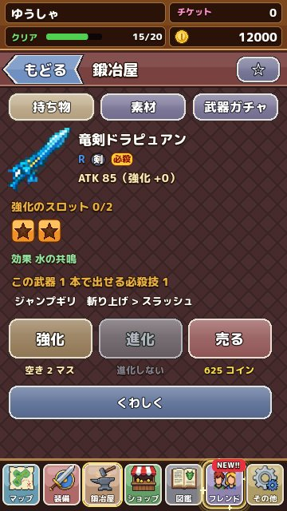
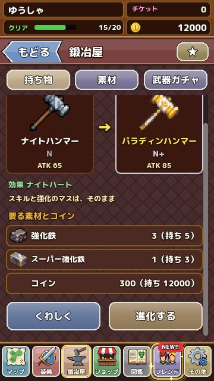

鍛冶屋の使い方：強化と進化
鍛冶屋で装備を強くする「強化」と、一つ上のレア度へ変える「進化」のやり方をまとめました。 更新：2026-11-13
鍛冶屋でできること
鍛冶屋は地図の下の欄から行けます。最初に装備を 1 つ選び、そのあとで強化・進化・売却を選ぶ流れです。お気に入りの装備には ★ をつけておくと、うっかり売ったり素材にしたりするのを防げます。

強化
強化は、強化鉄などの素材を使って、装備の力を上げることです。装備には強化のマス（星の印）があり、強化するたびにマスが埋まっていきます。マスの数は装備によってちがい、レア度の高い装備ほど多く強化できます。
- 強化鉄・スーパー強化鉄：強化に使う基本の素材です
- ミラクルベル：強化を大きく成功させる、めずらしい品です
- フエルスロット：強化のマスを増やせる、とても貴重な品です
- スロットリセット：強化のマスをやり直すための品です
進化
進化は、素材を集めて、装備をひとつ上のレア度の装備へ変えることです。たとえば N の武器は N+ へ、N+ は R へと、一段ずつ進化します。進化先の装備は名前も見た目も変わり、力が大きく上がります。
進化に使う素材は、強化鉄のような共通の素材と、ボスが落とす素材の組み合わせです。足りない素材は、下のランクの素材から自動で作れることもあります。どうしても足りないときは、進化の画面から「どこで手に入るか」を確かめられます。

素材の集め方
素材は、敵が落とす袋や宝箱から手に入ります。ボスの素材は、そのボスがいるエリアの STAGE で集めるのが近道です。鍛冶屋の「素材」の欄では、手持ちの素材を一覧で確かめられ、おすすめの集め場所へすぐに出発できます。
強化と進化、どちらを先に？
長く使うつもりの装備は、強化と進化の両方で育てていきましょう。すぐに付けかえる予定の装備は、強化鉄を使わずにとっておくほうが無駄がありません。強化のマスが進化のあとどうなるかは、進化の画面に書かれているので、進化させる前に確かめてください。
素材は 999 個まで持てます。強化鉄は多めにためておき、お気に入りの装備が手に入ったときに一気に強くするのがおすすめです。
売却のコツ
いらない装備は鍛冶屋で売るとコインになります。ショップの売却では、たくさんの装備を選んでまとめて売ることもできます。★ をつけた装備は売れないようになっているので、大事な装備には先に ★ をつけておきましょう。進化の素材になる装備もあるので、売る前に進化の画面で使い道を確かめておくと安心です。